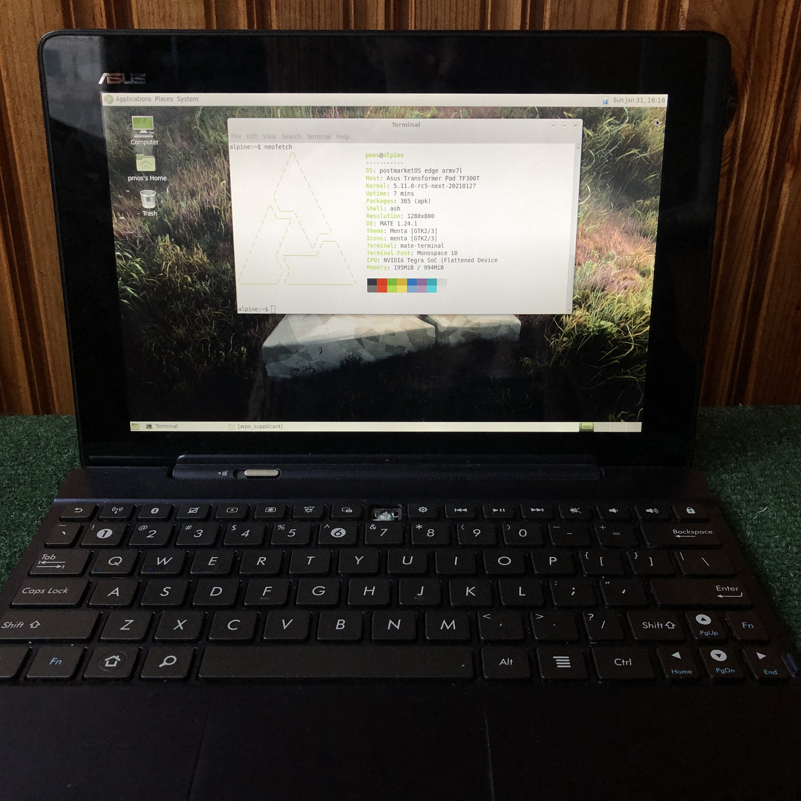

ASUS Transformer Pad (asus-tf300t)
|
 ASUS Transformer Pad | |
| Manufacturer | ASUS |
|---|---|
| Name | Transformer Pad |
| Codename | asus-tf300t |
| Released | 2012 |
| Category | testing |
| Original software | Android 4.0 on Linux 3.1 |
| postmarketOS kernel | mainline grate |
| Hardware | |
| Chipset | Nvidia Tegra 3 T30L |
| CPU | Quad-core 1.3 GHz Cortex-A9 |
| GPU | NVIDIA ULP GeForce GPU 12 cores |
| Display | 1280x800 IPS |
| Storage | 16/32 GB |
| Memory | 1 GB |
| Architecture | armv7 |
{kind=link}
| USB Networking |
Works
|
|---|---|
| Flashing |
Works
|
| Touchscreen |
Works
|
| Display |
Works
|
| WiFi |
Works
|
| FDE |
Works
|
| Mainline |
Works
|
| Battery |
Works
|
| 3D Acceleration |
Partial
|
| Audio |
Partial
|
| Bluetooth |
Works
|
| Camera | |
| GPS | |
| Mobile data |
Unavailable
|
| SMS |
Unavailable
|
| Calls |
Unavailable
|
| USB OTG |
Works
|
| NFC |
Unavailable
|
| Accelerometer |
Works
|
|---|---|
| Magnetometer |
Works
|
| Ambient Light |
Works
|
| Proximity |
Unavailable
|
| Hall Effect |
Works
|
| Ir TX |
Unavailable
|
|---|---|
| TrustZone |
Partial
|
|
This device is based on Tegra 3. See the SoC page for common tips, guides and troubleshooting steps |
Contributors
- osctobe (Michał Mirosław)
- Clamor
- Ion Agorria
Device owners
Variants
- TF300T - regular wifi only tablet, currently has support both in pmaports and grate Linux kernel fork.
- TF300TG - 3G version of TF300T with some slight differences. Modem is very close to Nexus 7 2012 cellular (tilapia).
- TF300TL - LTE version of TF300T with differences similar to TF300TG. Uses Asus custom modem setup and doesn't have mainline driver for it.
Note: TF300TL has experimental support in this grate fork. TF300T and TF300TG are officially supported.
Unlocking
The first step to do anything with the device is unlocking, with this device its done by sideloading the unlock apk from asus and clicking a few buttons in the app. In case you get a network connection error, you will need to patch the unlocker.
Compiling a kernel
Android kernel
- 3.1 kernel based on ASUS sources with updates till Oreo support (Morpheus kernel)
- 3.4 kernel as a part of Unlegacy Android Project (Unlegacy kernel)
Mainline (Grate)
- Baseline kernel sources on master: https://github.com/grate-driver/linux
- Proper dts for TF300T is added
- Version: 5.17.0
- Status: Boots. Almost full support.
Installation
How to enter flash modes
Turn tablet off if it is in the system. Then press POWER and VOL DOWN buttons till you feel the vibration. Then release the POWER only. You will enter the bootloader/fastboot. In bootloader you can navigate with VOL DOWN button and to choose option use VOL UP button.
Bootloader version
You need bootloader version of 10.6.1.27.5 which is available in latest android ROM provided by Asus.
Installation process
| The bootloader doesn't handle flashing the boot and userdata partition correctly, the official firmware package flashes an "Android blob" to the staging partition with fastboot which triggers an flashing screen on the tablet which copies the data to the correct partitions. pmbootstrap has tools to pack and flash kernel correctly, no worries! |
Preparing rootfs and flashing kernel:
1 $ pmbootstrap init
2 $ pmbootstrap install
3 $ pmbootstrap flasher flash_kernel
Flashing rootfs to eMMC
Warning! |
Preferable way of installing pmOS is installing on microSD card! |
| This may change size of your data partition. You can fix it by resizing partition in TWRP before flashing Android. |
You should proceed very carefully here.
Rootfs should be flashed to the /userdata partition.
Prerequisites: TWRP, at least version 3.3.1-0, binaries for 10.6.1.27.5 bootloader are here.
First, start TWRP (go to bootloader and choose RCK) and then continue with these instructions
1 (computer) $ pmbootstrap export
2 (computer) $ adb shell
3 (twrp) $ umount /dev/block/mmcblk0p8 <- unmounting /data partition
4 (computer again) $ adb push /tmp/postmarketOS-export/asus-tf201.img /dev/block/mmcblk0p8 <- to flash rootfs to /data partition - Make sure to use the correct model number (i.e. `asus-tf300tg.img` or `asus-tf300t.img`)
Hardware status (mainline)
| Status | Hardware | Info |
|---|---|---|
| Y | Booting | boot.img has restriction of approx 8MB, which is /boot partition size. |
| Y | Bootloader | Open source bootloader U-Boot is available as alternative for stock Asus bootloader and can replace it. U-Boot can not boot downstream kernel due to TrustZone problem. |
| Y | Panel | Innolux G101ICE-L01 WXGA (1280x800) LCD IPS panel through LVDS controller. |
| Y | HDMI output | HDMI works, but maximum output is 1080p due to Tegra 3 limitations. |
| Y | Touchscreen | Used Elantech EKTH1036 touchscreen. |
| Y | USB | One full size USB 2.0 in dock or via 40pin adapter. |
| Y | SD cards | MicroSD card and full sized SD card (recognized as USB drive) in dock. |
| Y | Internal memory | Hynix emmc, works. |
| P | GPS | Broadcom GPS BCM4751 is used. Needs more attention. |
| Y | WiFi | Uses Azurewave AW-NH615 BCM4329. Wi-Fi works and firmwares are included. |
| Y | Bluetooth | Uses Azurewave AW-NH615 BCM4329B1. Works fine out of the box. |
| Y | GPIO keys | There is 3 keys on GPIO: Power, Volume up, Volume down.
Additionally GPIO-keys like are LID sensor and Audio dock line-out detect. |
| Y | Dock Keyboard | Both pad and dock have Nuvoton NPCE795LA0BX embedded controller which handles battery data, charging, leds, keyboard and touchpad. Driver of this EC is mainlined and is fully functional. Keyboard and Touchpad work.
Alt Gr can be used for alternate multimedia keys instead of escape, fn keys, volumes and delete. Alt GR + Lock changes the default key mode. |
| Y | Battery/Charger | Driver is based on Texas Instruments bq24725 SMBus Charge Controller driver and GPIO charger but works through pad/dock EC. Charging and charge level of both batteries are shown correctly. |
| Y | PMIC | Transformers use Texas Instruments TPS659110 PMIC and TPS62361 core regulator. |
| P | Sound | Sound codec is WM8903 on TF300T and RT5631 on cellular models. Kernel driver and tegra_wm8903/tegra_rt5631 glue drivers are present. Further ALSA configuration is needed. Audio through HDMI works. |
| N | Voice processor | Transformers use separate Fortemedia FM34NE voice processor. Mainline driver prototype is available but kernel lacks way to get mic status (dsp is internal mic dependent). Is used for voice processing and cancelling. Currently is disabled. |
| Y | Thermal sensor | NCT1008 ON Semiconductor LM90 series thermometer. |
| Y | Orientation sensors | Include Invensense mpu3050 gyroscope with Kionix KXTF9 accelerometer and Aichi AMI306 3-axis digital compass. |
| Y | Light sensor | Driver Dyna-Image AL3010. Brightness regulation works, install iio-sensor-proxy . It's slightly oversensitive. |
| N | Front camera | Aptina mi1040 camera sensor. Grate kernel doesn't support VI yet. Mainline linux driver exists (authored by Okias) and proper nodes are added to device tree. |
| N | Rear camera | Is not planned to be added to support list. If you have such a need, development is welcome. Mainline driver doesn't exist. |
| P | ULP GeForce | GPU Acceleration partially works. |
| N | Modem | All modems operate on USB with HSIC mode (which is not implemented). TF300TG uses XMM6260. TF300TL in downstream uses some Asus implementation of modem driver. Contributions are welcome, no work done yet. |
Usability
Desktop environment
Since 3D acceleration is not available yet, all DE which use it will be painfully slow and laggy.
Currently xfce4 or mate are recommended.
See also
- Asus Transformer device family on Tegra 3 includes also Transformer Prime TF201 and Transformer Pad Infinity TF700T
- Michał Mirosław latest kernel
- jonty-comp's pld kernel jonty-comp's old pmbootstrap